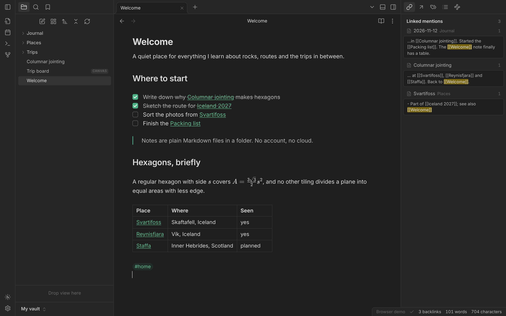
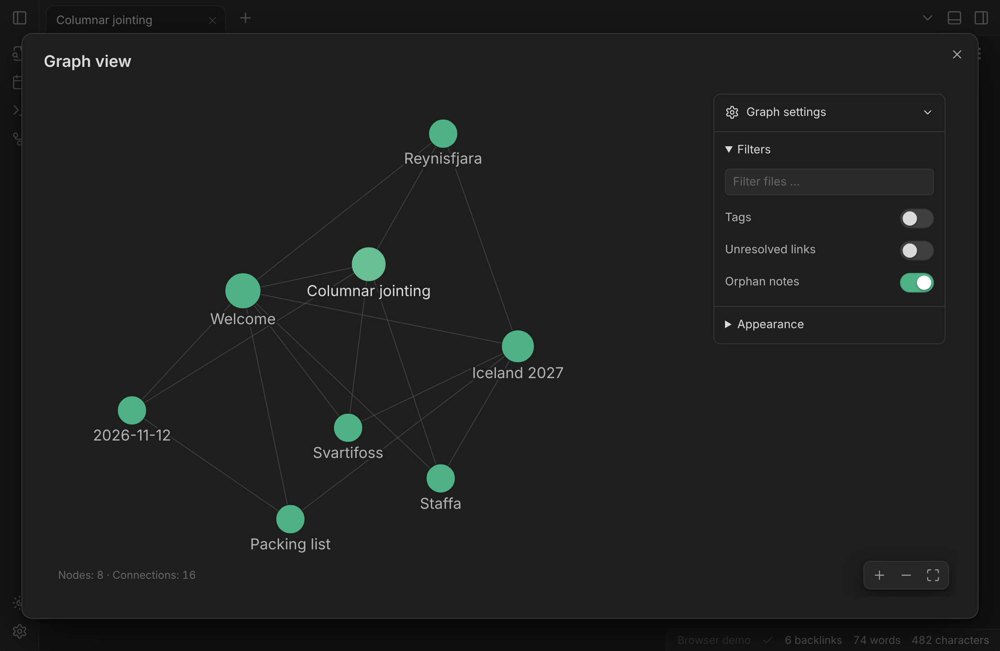
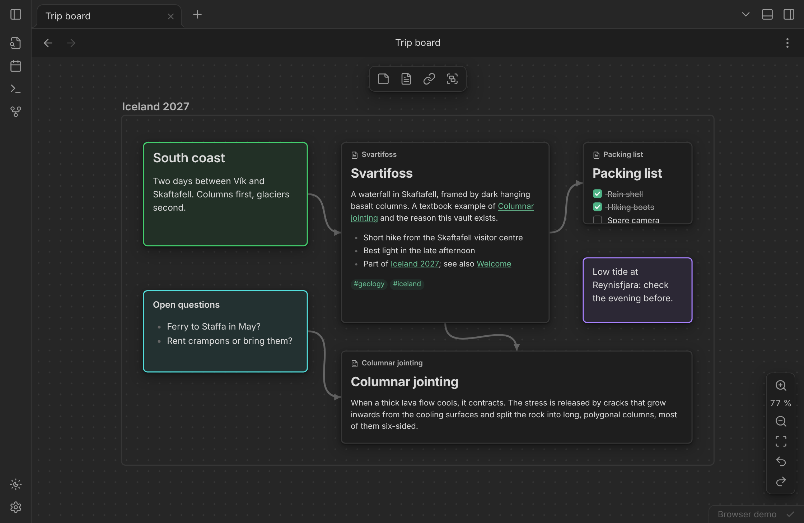
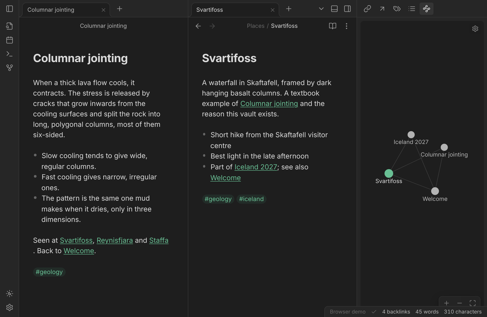
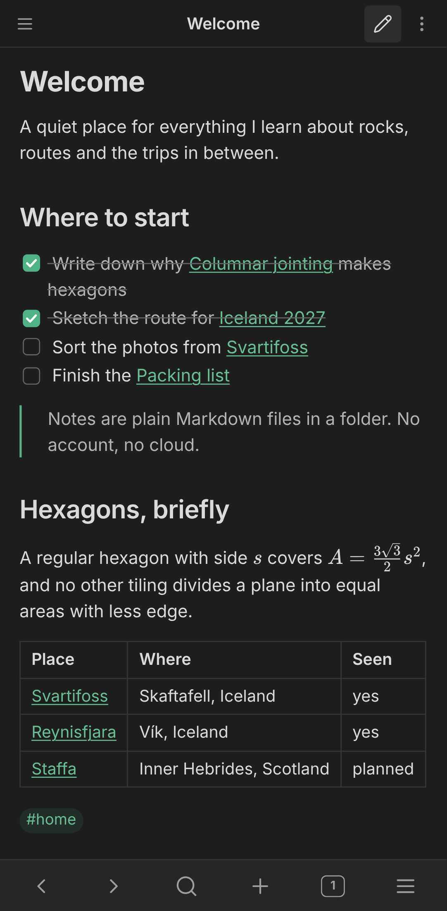

Your files stay your files
Notes are plain Markdown in a folder you choose. No account, no cloud, no telemetry.
Preview 0.2 · Linux & Android · open source
Basalt is a local-first Markdown workspace for Linux and Android. Your notes are plain files in a folder you choose, and existing Obsidian vaults open directly.
No account. No cloud. No telemetry.

That is the real app, not a mock-up. The demo keeps its notes in your browser only.
Notes are plain Markdown in a folder you choose. No account, no cloud, no telemetry.
Wiki links, tags, frontmatter, callouts, embeds and canvas files behave the way you expect.
One shared Rust core, one native app, and an interface for mouse, keyboard, touch and pen.
Every change is backed up before it is saved, and earlier versions can be restored. External edits are detected, not overwritten.
#writing
In live preview the syntax fades while you write. Links and checkboxes are clickable, and math, diagrams and tables render right in the editor. The Markdown underneath stays the source of truth.
[[wiki links]] and
#tags
what you type
## Hexagons, briefly - [x] Write it down - [ ] Link it to [[Svartifoss]] > Slow cooling, wide columns. $A = \frac{3\sqrt{3}}{2}s^2$
what you see
Write it down
Link it to Svartifoss
Slow cooling, wide columns.
A = 3√32 s2
#linking
Every link works in both directions. Backlinks show the sentence around each mention, and the graph draws your vault as what it is: a network.
tag:,
path: and
file:

#canvas
Some thoughts are not a list. Put notes, text, links and groups on an endless canvas and connect them with arrows.
.canvas)

#workspace
Split the editor, dock side views where you want them and keep a second note next to the first. The layout is remembered per vault.

#android
The Android app is not a shrunken desktop. It has its own layout with drawers, a bottom bar and a formatting toolbar above the keyboard, and it runs on the same Rust core.

#plugins
Basalt ships its own implementation of the Obsidian plugin API. The goal is solid support for a chosen set of plugins rather than a vague promise for all of them.
Plugins live in the vault under Basalt/Plugins/ and
only run after you enable each one in the settings.
A missing API fails visibly instead of pretending to work. Plugins that need Node.js or Electron do not run.
Plugin code runs with the same permissions as the app. Only enable plugins you trust.
#bedrock
Basalt is three layers with a narrow seam between each. The part that touches your files is a small Rust library that knows nothing about the interface, and it is deliberately cautious.
.basalt/history/ first; deleted
files go to
.basalt/trash/
#status
Basalt is a preview (0.2) and not yet a complete replacement for Obsidian. The core is stable and tested, but a few things are missing:
Make a copy of any important vault before opening it for the first time.
Free and open source. Signed packages are published on GitHub.
x86_64, as a .deb package or an AppImage.
One universal APK for ARM64, ARMv7 and x86_64.
Download for AndroidAll downloads are signed. Check them against these fingerprints as described in the release signing notes.
628F A944 F494 AED2 1F0B 6CCD B72F F2A2 4F65 FB22
C0:3E:FA:2F:40:12:C4:57:FC:44:D7:68:B2:64:AA:BF:0F:2D:54:D3:3B:C3:06:7B:8C:6D:1B:76:84:83:4A:51